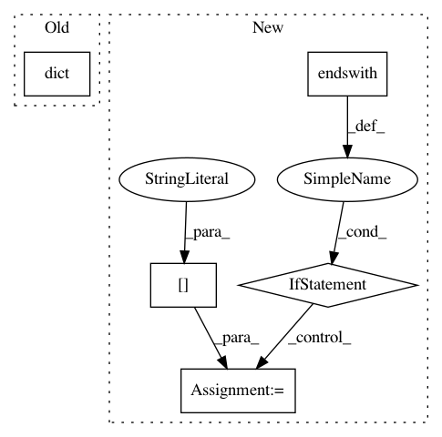

0cd42478586c9cb1febb6b76eea068aac8869a1e,sacred/ingredient.py,Ingredient,__init__,#Ingredient#Any#Any#Any#Any#,38
Before Change
self.path = path
self.config_hooks = []
self.configurations = []
self.named_configs = dict()
self.ingredients = list(ingredients)
self.logger = None
self.captured_functions = []
self.post_run_hooks = []
After Change
Decorator to turn a function into a captured function.
The missing arguments of captured functions are automatically filled
from the configuration if possible.
See :ref:`captured_functions` for more information.
If a ``prefix`` is specified, the search for suitable
entries is performed in the corresponding subtree of the configuration.
if function in self.captured_functions:
return function
In pattern: SUPERPATTERN
Frequency: 3
Non-data size: 5
Instances
Project Name: IDSIA/sacred
Commit Name: 0cd42478586c9cb1febb6b76eea068aac8869a1e
Time: 2018-01-24
Author: dismaldenizen@gmail.com
File Name: sacred/ingredient.py
Class Name: Ingredient
Method Name: __init__
Project Name: sassoftware/python-dlpy
Commit Name: 8afa7fb5dc0ef8bb6f2eb98e97d64821624b4e3c
Time: 2019-08-02
Author: Xiaozhuo.Cheng@sas.com
File Name: dlpy/tests/test_speech.py
Class Name: TestSpeechToTextInit
Method Name: setUp
Project Name: sassoftware/python-dlpy
Commit Name: 8afa7fb5dc0ef8bb6f2eb98e97d64821624b4e3c
Time: 2019-08-02
Author: Xiaozhuo.Cheng@sas.com
File Name: dlpy/tests/test_speech.py
Class Name: TestSpeechToText
Method Name: setUpClass